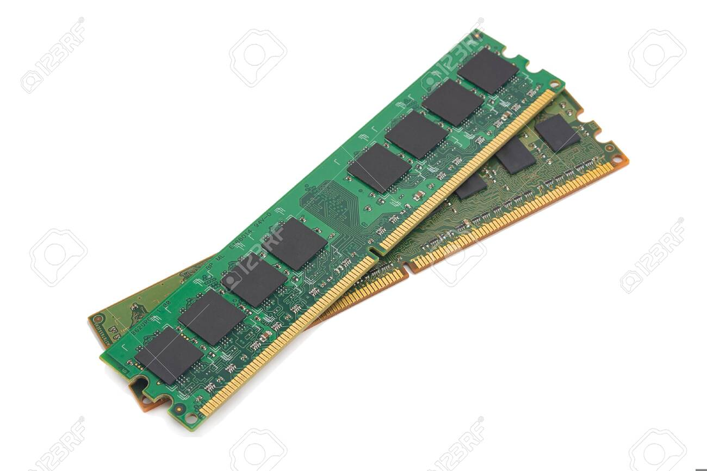

Definition: Main memory refers to physical memory that is internal to the computer. The word main is used to distinguish it from external mass storage devices such as disk drives. The computer can manipulate only data that is in main memory. Therefore, every program you execute and every file you access must be copied from a storage device into main memory. The amount of main memory on a computer determines how many programs can be executed at one time and how much data can be readily available to a program. The terms RAM and primary storage also represent main memory.
